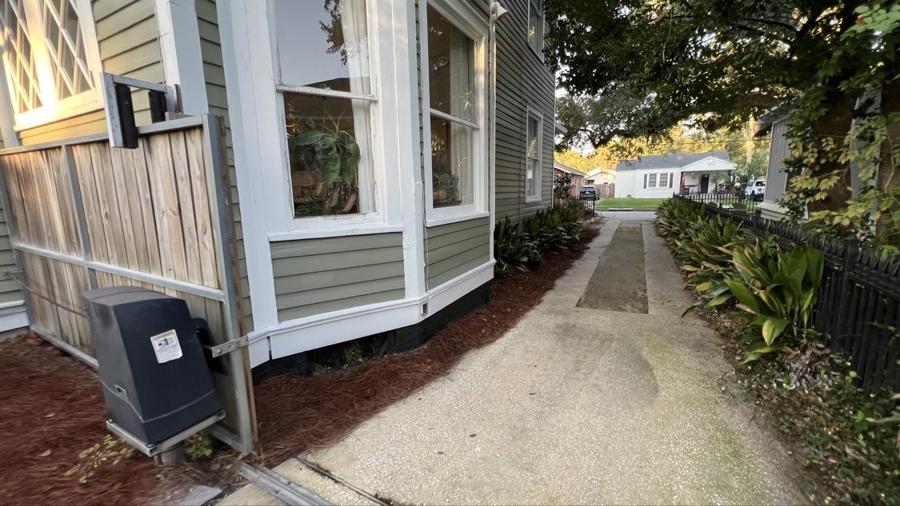

From the blog
House Soft Washing in Mobile, AL: What It Is and What It Costs
October 19, 2026

Drive through West Mobile, Midtown, or out on the Eastern Shore in Fairhope and Daphne and you will see it: green and black streaks creeping up the siding, mildew growing on the north side of the house, a film of pine pollen coating everything by spring. Our climate grows things fast, and your siding is no exception. Soft washing is how you take it off without beating up the house.
What soft washing actually is
Soft washing is not pressure washing your house. A soft wash uses low pressure water plus cleaning solutions that kill the algae, mildew, and mold at the root. The solution does the work, not the force of the water. That matters because high pressure can force water behind vinyl siding, strip paint, gouge wood, and ruin window seals. Soft washing cleans deeper and the results last longer, because the growth is killed instead of just blasted off the surface. One wash typically keeps a Mobile home looking clean for a year or more, depending on shade and trees.
Signs your house is due for one
- Green or black streaks on siding, brick, or stucco. That is algae feeding on the humidity, and it spreads.
- A mildew smell near the walls or porches. If you can smell it standing on the porch, the growth is established.
- Pollen baked onto everything. In Mobile, pollen season leaves a yellow film that bakes into siding through summer. It is much easier to wash off than to scrub off.
- Dirt splatter up the lower siding. Rain kicks dirt and mud up the bottom rows. A soft wash brings it back to the original color.
- Spiders and wasps taking over. Cobwebs and nests build up fastest on dirty siding. A clean wash resets the whole exterior.
What a professional soft wash includes
A proper job covers the full exterior: all siding, soffits and fascia, around windows and doors, and usually the lower brick or foundation line. Plants and mulch beds get watered down before and after so the cleaning solution does not harm your landscaping. A good tech works top to bottom and rinses as he goes so nothing dries on the glass. We also hit the porch ceilings and trim, where mildew loves to hide in the shade.
What it costs in Mobile
Our house wash is priced by the square footage of the home, from $349 for a small one story up to $899 for a larger home, with two story homes priced higher. No guesswork: you can run your address through the estimator on our site and see your exact price before you book. Most single story homes in Mobile land somewhere in the middle of that range.
Why hire a local pro instead of doing it yourself
Store bought bleach mix is not a soft wash system. The right solution strength, the right dwell time, and full rinsing are what keep your plants alive and your paint on the wall. We also know which neighborhoods have well water that leaves iron stains and which have the worst pollen load. A veteran owned local crew treats your home like it is our own, and our customers say so in our 5-Star Google Reviews.
Siding looking green? Get your free quote.
Kinney Cleaning Services soft washes homes across Mobile and Baldwin counties. Veteran owned and operated since 2019.
Call (251) 767-0754 Get a Custom Quote